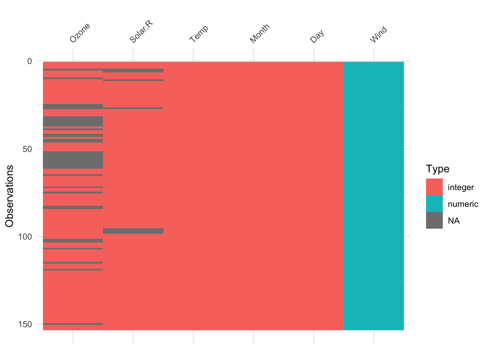
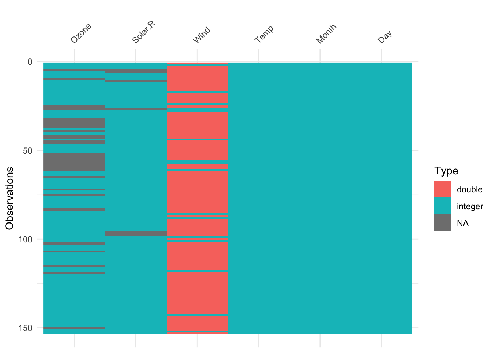

4 Una mirada a los datos
Primeramente creamos un primer chunk para cargar los paquetes o librerías de R requeridos para el trabajo con los datos:
library(visdat) # Paquete con varias herramientas para visualizar datos
library(DataExplorer) #Para usar la función plot_missing
library(mosaicData) # Paquete que contiene bases de datos
library(ggplot2) # paquete graficador de alto desempeño
library(colorspace) # Paleta de colores
library(dplyr) #para usar funciones de ordenamiento, selección, agrupación
library(GGally)
library(tidyr) # para usar la función drop_na
library(correlation) # para calcular correlaciones
library(PerformanceAnalytics)
library(psych)
library(ggraph)R posee algunas bases de datos de uso libre, de las cuáles en esta oportunidad se cargará la base de datos airquality la cuál contiene datos ambientales.
En RStudio podemos consultar la ayuda si se desea saber información sobre algún paquete, una función o alguna base de datos. La siguiente instrucción permite acceder a la ayuda para conocer cómo está cosntituida la base de datos airquality:
Seguidamente se carga la base de datos:
Se puede ver un resumen sobre como está constituida dicha base de datos con las siguientes indicaciones:
## Ozone Solar.R Wind Temp Month Day
## 1 41 190 7.4 67 5 1
## 2 36 118 8.0 72 5 2
## 3 12 149 12.6 74 5 3
## 4 18 313 11.5 62 5 4
## 5 NA NA 14.3 56 5 5
## 6 28 NA 14.9 66 5 6## Ozone Solar.R Wind Temp
## Min. : 1.00 Min. : 7.0 Min. : 1.700 Min. :56.00
## 1st Qu.: 18.00 1st Qu.:115.8 1st Qu.: 7.400 1st Qu.:72.00
## Median : 31.50 Median :205.0 Median : 9.700 Median :79.00
## Mean : 42.13 Mean :185.9 Mean : 9.958 Mean :77.88
## 3rd Qu.: 63.25 3rd Qu.:258.8 3rd Qu.:11.500 3rd Qu.:85.00
## Max. :168.00 Max. :334.0 Max. :20.700 Max. :97.00
## NA's :37 NA's :7
## Month Day
## Min. :5.000 Min. : 1.0
## 1st Qu.:6.000 1st Qu.: 8.0
## Median :7.000 Median :16.0
## Mean :6.993 Mean :15.8
## 3rd Qu.:8.000 3rd Qu.:23.0
## Max. :9.000 Max. :31.0
## ## 'data.frame': 153 obs. of 6 variables:
## $ Ozone : int 41 36 12 18 NA 28 23 19 8 NA ...
## $ Solar.R: int 190 118 149 313 NA NA 299 99 19 194 ...
## $ Wind : num 7.4 8 12.6 11.5 14.3 14.9 8.6 13.8 20.1 8.6 ...
## $ Temp : int 67 72 74 62 56 66 65 59 61 69 ...
## $ Month : int 5 5 5 5 5 5 5 5 5 5 ...
## $ Day : int 1 2 3 4 5 6 7 8 9 10 ...Usando el paquete visdat, hacemos una exploración gráfica de la base de datos:



plot_missing(airquality) # Me indica si tenemos datos en blanco y me da una recomendación, que en este caso dice que es "Good y Ok", lo cual no es mucho problema
Si se desea, se pueden omitir los datos NA, pero al implicar este procedimiento una modificación de la base de datos original, se recomienda crear una nueva variable de almacenamiento, como se muestra en el siguiente chunk: